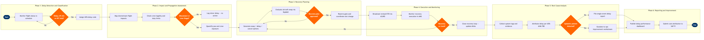

| Step | L4 Step Name | KPI / Target | Pain Point / Risk | Gate |
|---|---|---|---|---|
| 1.1 | Monitor flight status vs published schedule | On-time departure (D0) ≥78%; delay detection latency <2 min of STD | ACARS position reports lag by 90–120 sec on older aircraft, masking initial delay onset until gate hold is already confirmed | |
| 1.2 | Apply IATA delay threshold trigger rule | 100% of delays ≥15 min captured within 3 min of threshold breach | Altéa OC severity tiers are configurable per airline but default thresholds may not align with local slot-loss rules at congested airports such as LHR or JFK | ⚠ |
| 1.3 | Assign IATA AHM 730 delay code to event | Delay code accuracy rate ≥94% (validated at post-ops audit); code entry within 10 min of ETD revision | Controllers under workload pressure default to code 93 (unknown) or airline-internal codes; post-ops correction consumes analyst time and distorts monthly reporting | |
| 2.1 | Map downstream flight propagation impact | Propagation analysis completed within 5 min of delay event creation; ≥95% of knock-on delays correctly identified | SkyWORKS propagation engine requires manual tail-number linkage for ad-hoc swaps executed earlier in the day; stale tail assignments cause phantom impact estimates | |
| 2.2 | Check crew duty time legality under FAR Part 117 | Zero FAR Part 117 exceedances; crew illegality flag generated within 3 min of delay event propagation | Jeppesen CMS and Altéa OC use separate crew-to-flight linkage tables; sync latency of up to 8 min means early illegality flags can appear after the aircraft has already pushed | ⚠ |
| 2.3 | Identify passenger misconnection risk | Misconnect identification completed before inbound landing (≥30 min ahead); protected reaccommodation rate ≥88% same-day | Altéa DCS minimum connect time (MCT) tables require manual update when airports revise terminal layouts; outdated MCTs cause under- or over-protection triggering either rebooking churn or missed misconnects | |
| 2.4 | Assess whether delay qualifies for EC 261 compensation | EC 261 eligibility flag applied within 5 min of 3-hour delay threshold; 100% of entitled passengers notified before next boarding call | Extraordinary-circumstances exemption (weather, ATC) requires documented evidence within 72 hours; NOC controllers rarely capture contemporaneous ATC restriction references, leading to claims upheld in arbitration | ⚠ |
| 3.1 | Generate recovery options — swap, absorb, or cancel | ≥3 ranked scenarios generated within 10 min of escalation trigger; SRT ≤45 min for Moderate tier delays | SkyWORKS recovery workspace does not natively score scenarios by total cost-of-delay; controllers rely on manual mental arithmetic, leading to suboptimal aircraft swaps that increase crew costs | |
| 3.2 | Evaluate aircraft swap feasibility in SkyMAX | Aircraft swap evaluation completed within 8 min; maintenance-hold conflicts identified before physical repositioning begins | SkyMAX queries AMOS maintenance status via batch API with up to 15-min lag; a maintenance task opened in AMOS after the last sync can result in an illegal swap being physically initiated at the gate | ⚠ |
| 3.3 | Coordinate revised gate and slot with airport ops | Gate confirmation received ≥30 min before revised ETD; slot revision accepted at slot-controlled airports within IATA SSIM Chapter 8 tolerance window | At slot-coordinated airports (Level 3), missing the 15-min retiming window forfeits the slot and forces a new slot request; Altéa OC does not automatically alert the controller when the retiming window is about to expire | |
| 3.4 | Approve and lock recovery plan | Recovery plan approved and communicated ≥25 min before revised ETD; 0% plan revisions after lock (lock discipline metric) | NOC duty managers sometimes approve a plan before crew confirmations are fully resolved, requiring a second re-plan cycle that extends the delay by an additional 20–35 min | ⚠ |
| 4.1 | Broadcast revised ETD to all operational stakeholders | ETD update reaches all stakeholders within 2 min of plan lock; 100% of downstream flights updated in Altéa OC within 5 min | Catering and fuelling vendors receive notifications via separate legacy email/fax channels, not through AMS or Altéa; revision propagation to these vendors averages 12 min, risking late catering delivery that re-extends the delay | |
| 4.2 | Monitor recovery execution against revised milestones | Pushback within 3 min of revised ETD for ≥80% of recovery flights; milestone slip detection latency <90 sec | AMS milestone tracking relies on manual scan events at gates with intermittent handheld scanner connectivity; at remote stands, missing scan events create false 'on-track' status until ACARS pushback message arrives | ⚠ |
| 4.3 | Close recovery loop and update schedule actuals | 100% of closed delay events have IATA delay code confirmed within 30 min of ATD; actual block time accuracy ±1 min vs ACARS | Controllers frequently forget to close delay events after pushback under high workload; open events accumulate in Altéa OC, inflating active-delay counts and distorting NOC dashboard metrics | |
| 5.1 | Aggregate delay evidence and system event logs | Evidence package assembled within 24 hours of flight ops; data completeness ≥97% (all events have linked ACARS record) | ACARS message archive retention policy varies by data source; some third-party handling agents purge logs after 72 hours, making post-hoc evidence reconstruction impossible for disputes filed after that window | |
| 5.2 | Attribute delay causes per IATA AHM 780 methodology | Attribution accuracy ≥94% (audited quarterly by Quality); attribution completed within 48 hours of event for all Severe-tier delays | IATA AHM 780 assigns single-cause attribution, but most airline delays are multi-causal; forcing a single code obscures systemic issues (e.g. late catering masked as ATC when both contributed) and skews corrective action priorities | |
| 5.3 | Detect systemic delay patterns across rolling 30-day window | Systemic patterns identified within 5 business days of 3rd occurrence; false-positive pattern rate <10% | Pattern detection thresholds are set manually and rarely reviewed; low thresholds generate alert fatigue (managers ignore flags), while high thresholds allow systemic issues to accumulate for 6–8 weeks before escalation | ⚠ |
| 6.1 | Publish delay performance report to operations leadership | Report published by 08:00 Monday; OTP data currency within 12 hours of end of reporting week | Delay cost estimates in the report use average cost-per-minute assumptions (typically €80–100/min CODA benchmark) rather than actual cost data; finance does not integrate actual incremental cost from SAP FI in time for the weekly cycle | |
| 6.2 | Submit delay cost attribution to Finance for accrual | 100% of Severe-tier delay costs accrued in SAP FI within 5 business days of event; variance between estimated and actual delay cost <15% | SAP FI cost centre structure does not granularly distinguish catering vendor delays from ground handler delays; both post to generic 'Ground Services' cost centre, preventing targeted vendor SLA penalty enforcement |